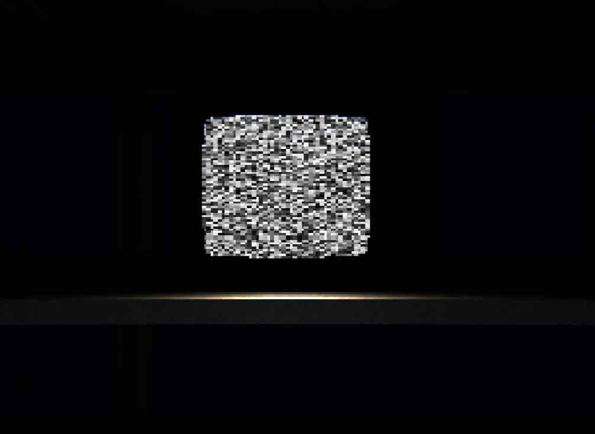
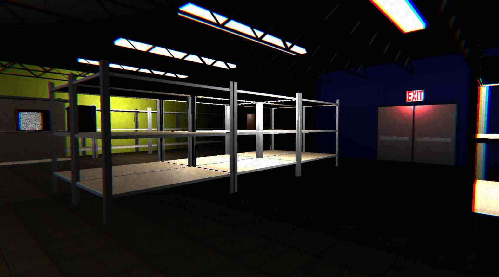
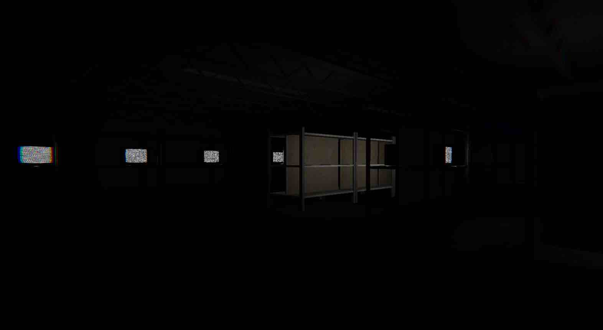
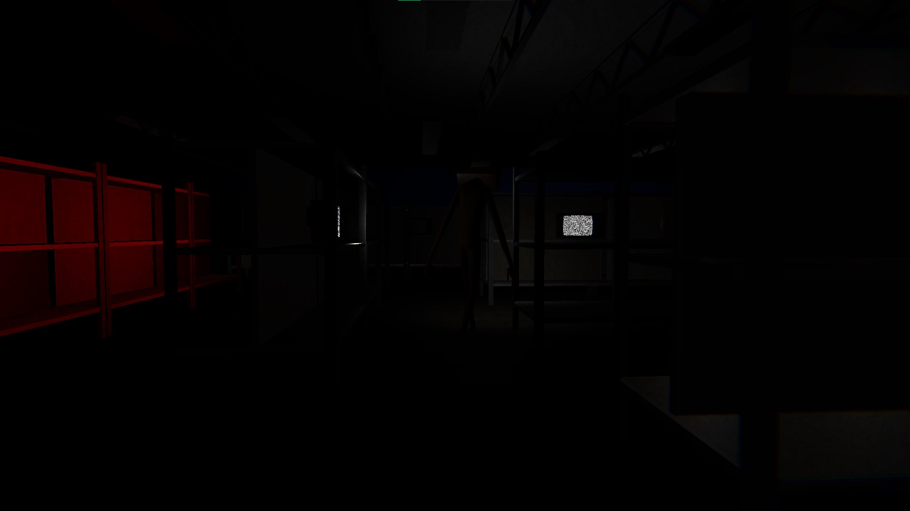
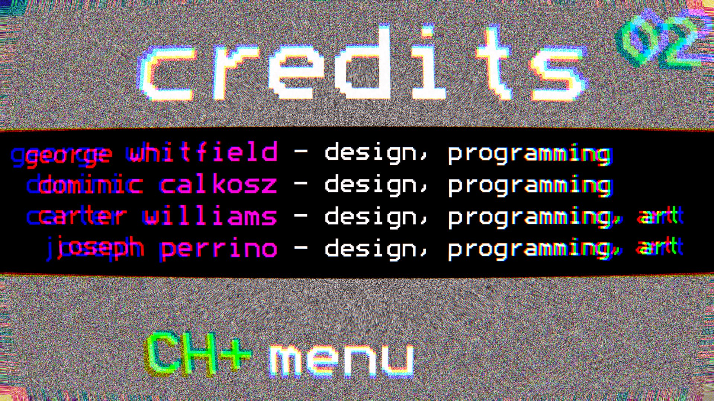

Fall 2020 - Gameplay Programming (Unity)
Overview
Static is a single player first-person horror game where the main
character, a television store janitor, unplugs televisions
as a part of a memory game.
The game has two phases. In phase 1, the player must
walk throughout the store while memorizing which TVs are
turned on. In phase 2, the store becomes dark and the
player must unplug ONLY the TVs that were on during phase 1. During
phase 2, a few TVs that were once off have now mysteriously turned
themselves on...
I did the programming for monster state management and player movement.
I also created the pause screen, intro, and death user interfaces.
Please check out
Monster.cs
for a code sample.
The monster roams the store while playing creepy TV static noises.
The monster has 3 states: ROAM, PURSUE, and STARE.
If both the monster and player see each other, the monster will scream and
run towards the player. If the monster sees the player but the player
does not see the monster, the monster will stare at the player.
If neither the player nor the monster
see each other, the monster will roam throughout the store.
I worked on a team with 3 other CMU students. We created this game
within one week for the
Bit Bridge Halloween Jam.
Check out
Static's page on the GCS website
to download the game for Windows/MacOS.
Screenshots




